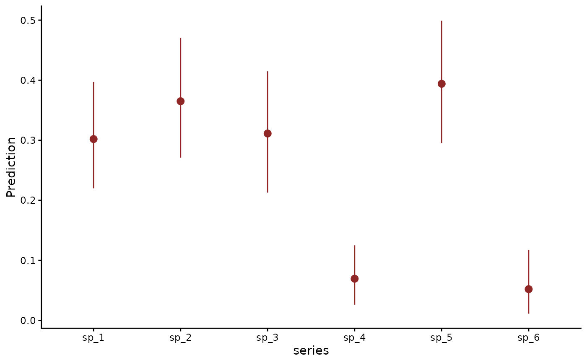
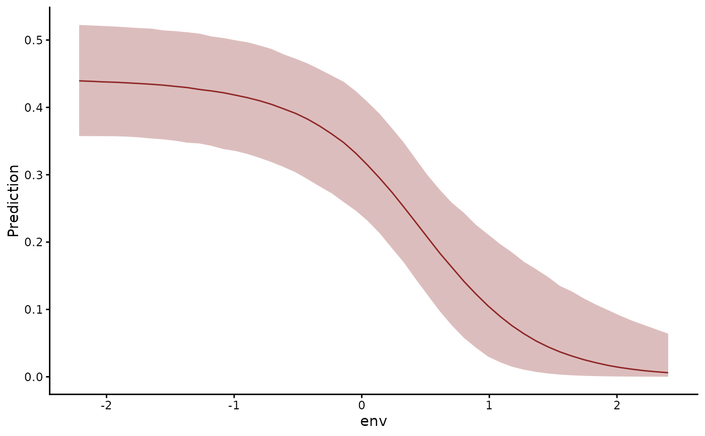
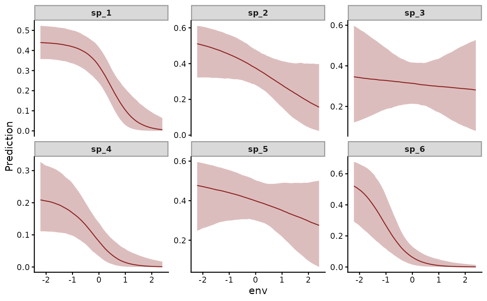
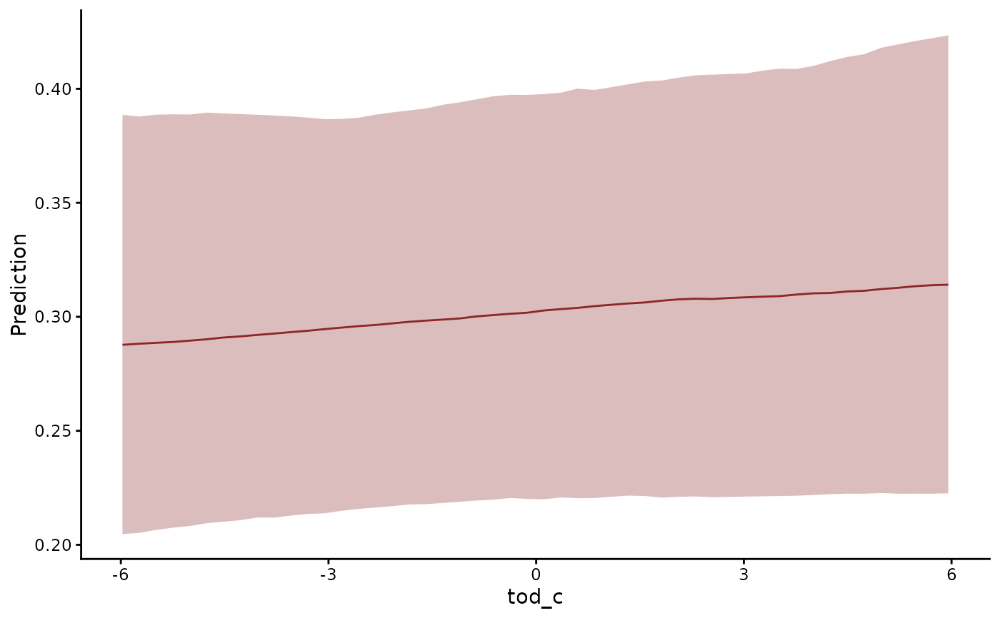
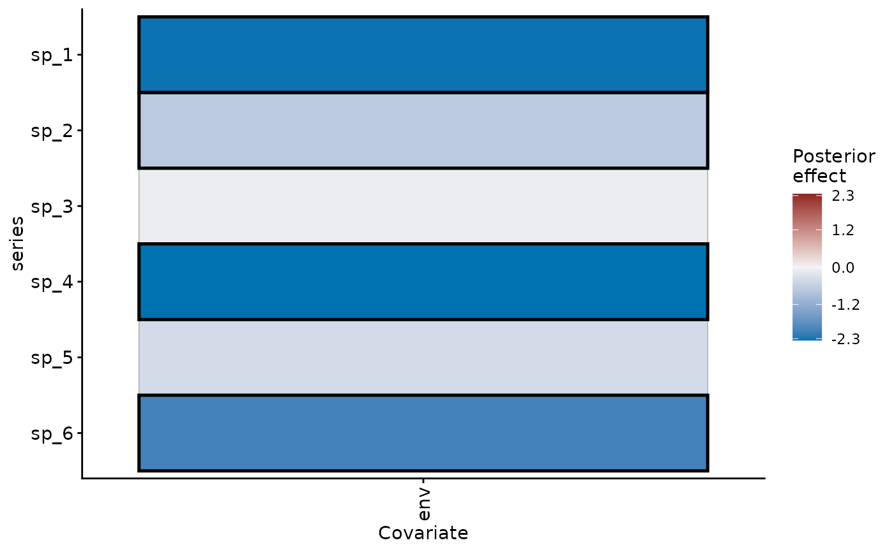
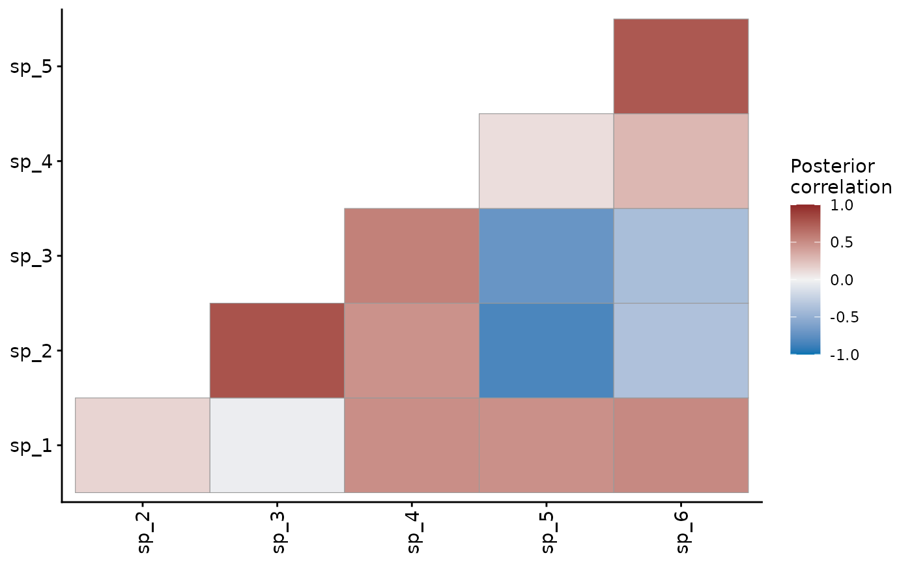
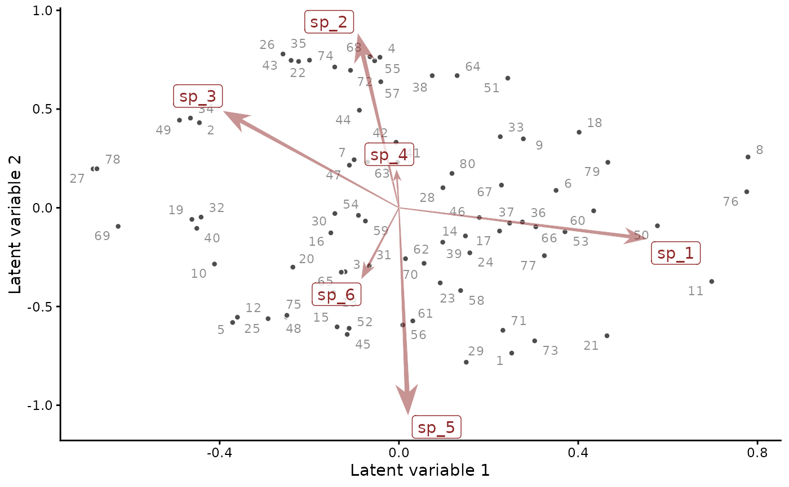
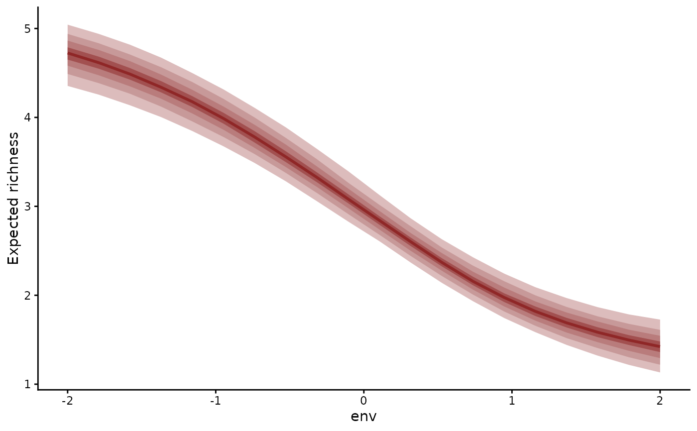
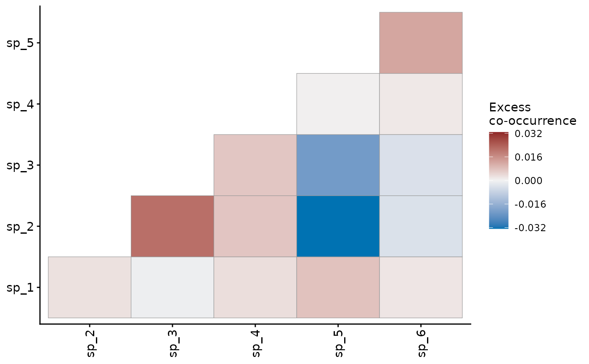

Computes quantities of a whole community, draw by draw, from a model
of many series. A community is every series at one site and time.
Each gets its expected number of species, its diversity and its
community-weighted mean traits. Each species gets its probability of
presence. Each pair of species gets how often it occurs together
beyond what the covariates predict. Pass newdata as a covariate
gradient, such as one from datagrid(), to see how the community
changes along it.
Usage
community(object, ...)
# S3 method for class 'mvgam'
community(
object,
newdata = NULL,
...,
threshold = NULL,
traits = NULL,
latent = c("marginal", "conditional", "forecast", "zero"),
n_nodes = 100L,
ndraws = NULL,
draw_ids = NULL,
resp = NULL,
prob_threshold = 0.95
)
# S3 method for class 'mvgam_community'
summary(object, probs = c(0.025, 0.975), ...)
# S3 method for class 'mvgam_community'
as_draws_rvars(x, ...)
# S3 method for class 'mvgam_community'
as_draws_df(x, ...)
# S3 method for class 'mvgam_community'
print(x, digits = 2L, ...)
# S3 method for class 'mvgam_community'
plot(
x,
type = c("richness", "diversity", "cooccurrence"),
along = NULL,
supported_only = FALSE,
...
)Arguments
- object
A fitted
mvgamobject.- ...
Unused. Anything passed here is refused.
- newdata
Data frame with one row per community, holding its covariates. Each row is crossed with every fitted series, which replaces any series column it holds.
NULLtakes the communities of the training data, or underlatent = "forecast"those of the data held out at fit time. Such a community is the rows sharing a time and any other key of the family's units, such as the site of a multi-seasonocc()fit.- threshold
A species counts as present when its response exceeds
threshold.NULL(the default) takes zero, which a count or binary family needs. A continuous family needs a value, such as a biomass. Undernmix()it applies to the latent abundance.- traits
Species traits for community-weighted means: a data frame with one row per species, matched as
jsdgam()matches itstraits, or"auto"for the traits the fit was built with, those oftraitsor else oftrait_slopes.NULL(the default) computes none.- latent
How the latent state enters.
"marginal"(the default) averages over it."conditional"takes the state the model fitted, for communities in the training data."forecast"propagates the fitted state to communities after the training data."zero"sets it to zero, a typical site. See Latent state.- n_nodes
Number of latent states each draw averages over under
latent = "marginal"or"forecast".- ndraws, draw_ids
The posterior draws to use, as
hindcast.mvgam()takes them.NULLfor both uses every draw.- resp
The response to report, needed on a model with several.
- prob_threshold
The posterior probability of its sign a pair's excess co-occurrence needs to count as supported, at least 0.5 and below 1. Defaults to 0.95. It sets the
sigcolumn of the co-occurrence table and the pairsplot()outlines.- probs
Interval probabilities of the tables. Defaults to
c(0.025, 0.975).- x
An
mvgam_communityobject fromcommunity().- digits
Integer number of significant digits. Defaults to 2.
- type
"richness"(the default) draws richness along a column of the communities."diversity"draws each diversity measure."cooccurrence"draws each pair's median excess co-occurrence, outlining a pair whoseprob_nonzeroexceedsprob_threshold.- along
The column of the communities to draw along.
NULLtakes the first numeric column that varies.- supported_only
Logical, for
type = "cooccurrence".TRUEleaves blank every pair whoseprob_nonzerois at mostprob_threshold. Defaults toFALSE.
Value
An object of class mvgam_community. print() gives each
community's richness. summary() takes probs and returns a list
of tibbles, each with its median and interval. richness and
diversity hold one row per community, presence one per
community and series and cooccurrence one per pair of species.
plot() draws richness or diversity along a column of newdata,
or the excess co-occurrence of each pair.
as_draws_rvars() returns the posterior draws as
posterior::rvar()s, ready for arithmetic between communities and
for posterior::summarise_draws(). Community i is row i of the
object's communities element.
richnessone per community
presence[community, species],NAwhere a community lacks the speciesdiversity[community, measure], one measure per Hill number and trait, when there are anycooccurrence[species, species]excess co-occurrence
as_draws_df() returns the same draws as a data frame, one column
per element.
Details
Richness. Each draw sums the species' probabilities of presence,
giving the expected number present. A count family's probability is
one less its probability of a zero, which covers zero inflation and
hurdles. Under occ() it is the occupancy probability and under
nmix() the probability that the latent abundance exceeds
threshold. Richness counts the species the model holds.
Latent state. Species share their latent factors or trends, which
move them together. Because presence is a non-linear function of the
latent state, a typical site differs from an average one. Under
latent = "marginal" each draw averages presence over n_nodes
latent states drawn from the trend's stationary covariance across
series. The draws of the latent state are shared by every community,
which makes a difference between communities free of their noise. A
RW() or LLT() trend has no stationary covariance. Each draw then
averages over the latent states it fitted at the training times.
Under latent = "forecast" each draw propagates its last fitted state
n_nodes times with fresh innovations, as forecast_uncertainty()
does. Presence is averaged over these paths. The communities need
times after the training data. Communities at one time share the
paths. A pair's excess co-occurrence then comes from the uncertainty
in the forecast state, which grows with the horizon.
Diversity. A family with an abundance, such as a count or a
biomass, weights each species by its expected value. Under nmix()
the weight is the latent abundance. Hill numbers of order one and two
(the exponential of Shannon entropy and inverse Simpson) follow from
the relative weights. A binary or occupancy family has no abundance.
Its weight is the probability of presence, which gives the expected
trait of the species present. Hill numbers are then left out. Each
measure is averaged over the latent states, giving the expected value
at one site. Under a count family the weights confound abundance
with detection.
A factor trait gives one column per level, whose weighted mean is the share of that level.
Co-occurrence. Species sharing a latent state appear together more
or less often than their covariates alone predict. A pair's excess
co-occurrence is the probability that both are present less the
product of their probabilities, averaged over the communities. A
pair the latent state moves independently has none. Neither does any
pair under latent = "conditional" or "zero", which fix the state.
See also
residual_cor() for the associations between species,
species_effects() for each species' response to the covariates,
variance_partition() for what moves each species
Examples
# \dontrun{
# Detections of 6 species at 80 sites, 4 visits each. Occupancy
# responds to the site covariate `env` and detection to the time of
# day `tod_c`. Two latent factors drive the species associations.
simdat <- sim_closure_unit_data(
family = occ(),
n_species = 6L,
n_sites = 80L,
n_visits = 4L,
n_lv = 2L,
seed = 1L
)
# A joint occupancy model. Each species has its own occupancy
# intercept and `env` slope, plus its own detection intercept. Two
# latent factors take up the residual association.
mod <- jsdgam(
formula = bf(y ~ series * env, p ~ series + tod_c),
factor_formula = ~ -1,
data = simdat$data_train,
family = occ(),
n_lv = 2L,
chains = 2,
silent = 2
)
summary(mod)
#> Family: occ
#> Links: mu = logit; p = logit
#> Formula: y ~ series * env
#> p ~ series + tod_c
#> Data: simdat$data_train (Number of observations: 1920)
#> Species: 6
#> Trends: 2 latent factors
#> Draws: 2 chains, each with iter = 2000; warmup = 1000; thin = 1;
#> total post-warmup draws = 2000
#>
#> == Observation Model ==
#> Regression Coefficients:
#> Estimate Est.Error l-95% CI u-95% CI Rhat Bulk_ESS Tail_ESS
#> Intercept 1.09 0.58 0.18 2.43 1.01 404 537
#> p_Intercept -0.23 0.17 -0.57 0.11 1.00 1239 1558
#> seriessp_2 -0.46 0.68 -1.96 0.76 1.00 625 647
#> seriessp_3 -1.32 0.64 -2.76 -0.23 1.01 566 655
#> seriessp_4 -1.51 1.17 -3.58 1.36 1.00 568 486
#> seriessp_5 -0.20 0.71 -1.70 1.11 1.00 618 654
#> seriessp_6 -3.31 0.84 -5.22 -1.91 1.00 756 941
#> env -2.33 0.85 -4.37 -1.00 1.01 443 549
#> seriessp_2:env 1.64 0.95 0.02 3.79 1.01 458 490
#> seriessp_3:env 2.25 0.91 0.81 4.43 1.01 488 576
#> seriessp_4:env -0.02 1.46 -3.33 2.68 1.00 439 557
#> seriessp_5:env 1.93 0.94 0.34 4.10 1.01 520 553
#> seriessp_6:env 0.30 1.09 -1.74 2.55 1.00 545 685
#> p_seriessp_2 0.57 0.24 0.10 1.03 1.00 1736 1847
#> p_seriessp_3 1.12 0.27 0.60 1.66 1.00 1821 1450
#> p_seriessp_4 -1.05 0.42 -1.88 -0.27 1.00 975 737
#> p_seriessp_5 0.52 0.24 0.03 1.00 1.00 1607 1579
#> p_seriessp_6 0.63 0.34 -0.05 1.29 1.00 2130 1771
#> p_tod_c 0.01 0.02 -0.03 0.05 1.00 4660 1289
#>
#> == Trend Model ==
#> Factor Loadings:
#> Estimate Est.Error l-95% CI u-95% CI Rhat Bulk_ESS Tail_ESS
#> Z_tilde[sp_1,1] 1.09 0.65 0.16 2.64 1.00 566 910
#> Z_tilde[sp_2,1] 0.22 0.92 -1.60 2.07 1.00 1332 1627
#> Z_tilde[sp_3,1] -0.04 0.73 -1.56 1.45 1.00 1348 1370
#> Z_tilde[sp_4,1] 0.39 0.94 -1.57 2.21 1.00 1274 1480
#> Z_tilde[sp_5,1] 0.52 1.02 -1.69 2.36 1.00 1257 1510
#> Z_tilde[sp_6,1] 0.40 0.90 -1.35 2.20 1.00 1012 1050
#> Z_tilde[sp_2,2] 1.03 0.66 0.06 2.55 1.00 1142 1479
#> Z_tilde[sp_3,2] 0.52 0.72 -1.06 2.03 1.00 1268 1412
#> Z_tilde[sp_4,2] 0.27 0.98 -1.67 2.22 1.00 1769 1685
#> Z_tilde[sp_5,2] -0.91 0.91 -2.53 1.15 1.00 1163 1643
#> Z_tilde[sp_6,2] -0.26 0.88 -1.97 1.65 1.00 1468 1321
#>
#> Draws were sampled using sampling(NUTS). For each parameter, Bulk_ESS
#> and Tail_ESS are effective sample size measures, and Rhat is the potential
#> scale reduction factor on split chains (at convergence, Rhat = 1).
#>
#> Next steps:
#> - `pp_check(fit, type = "fit_stat")`: goodness of fit of unit totals
#> - `plot(hindcast(fit, type = "latent_state"))`: posterior occupancy of each unit
#> - `shared_variation(fit)`: covariance the factors imply, unchanged by rotation
#> - `residual_cor(fit)`: implied correlations among species
#> - `ordinate(fit)`: biplot of the factor scores and loadings
#> - `loo(fit)` / `loo_compare(...)`: model fit + comparison
#> Use `how_to_cite(fit)` for a methods paragraph and `methods_md(fit)` for its equations.
# The effect of `env` on the chance of a detection, occupancy times
# detection
conditional_effects(mod)




# Each species' response to env, outlined where its sign is clear
plot(species_effects(mod, variables = "env"))

# The residual correlations among species the factors imply
plot(residual_cor(mod))

# Site scores and species loadings on the two factors
ordinate(mod, rotation = "varimax")
#> Registered S3 methods overwritten by 'ggpp':
#> method from
#> heightDetails.titleGrob ggplot2
#> widthDetails.titleGrob ggplot2

# Expected richness along `env`. The second plot marks the pairs of
# species found together more often than `env` predicts.
gradient <- datagrid(model = mod, env = seq(-2, 2, length.out = 20))
cm <- community(mod, newdata = gradient)
plot(cm)

plot(cm, type = "cooccurrence")

# The draws, for any contrast: richness at the end of the gradient
# less that at its start
rv <- as_draws_rvars(cm)
rv$richness[20] - rv$richness[1]
#> rvar<2000>[1] mean ± sd:
#> [1] -3.3 ± 0.44
# Next, compare n_lv = 1 with update(mod, n_lv = 1L) and loo()
# }